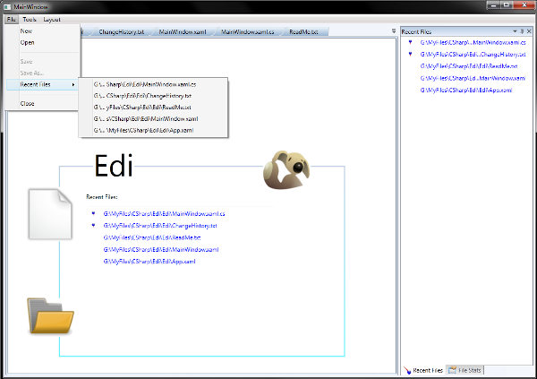
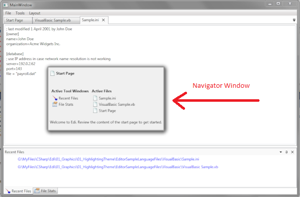
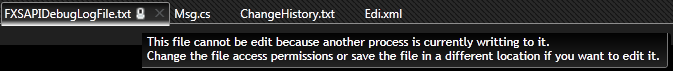
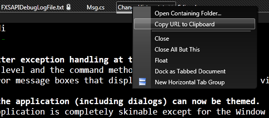

Download
Introduction
Please read the first part of this tutorial [1] if you are new to this series of articles.
I am in no way involved with the development of AvalonDock but fell that it was time to document some essential things. I am not sure whether I got everything completely right (since I am not the primary developer) but I am building on some experience and simply hope people will give me feedback here if I am making claims that are false.

This part of the tutorial, explains how we can add a Start Page to an application that is build on AvalonDock [2.0] and I will also document some experiences that I have made with focus problems when doing CTRL+TAB between documents and some customization options on document tabs. There may be more parts on other AvalonDock subjects (theming, localization, AvalonEdit in AvalonDock 2.0) later. Those who cannot wait for later articles shall look at Edi (http://edi.codeplex.com) to see some of the things before I document them here. This article was in fact written with Edi.
This article is based on a solution that requires only the AvalonDock project (you can download this from CodePlex), a SimpleControls library (that I documented here on CodeProject), and an application project called EDI. So lets have a look at the solution that is attached to this article.
The ViewModel
The first thing to note is the Edi.ViewModel.StartPageViewModel and the Edi.View.StartPage classes which are both introduced to implement the viewmodel and view of the Start Page item. We also note a new base ViewModel class of the FileBaseViewModel type is introduced to give the document viewmodels, FileViewModel and StartPageViewModel, a common root. The FileBaseViewModel is an abstract class with the following properties:
IsFilePathReal - Get whether the current path does exist on disk or not. This is for example useful when we have done File>New but not, yet, File>Save. In this case, the document may have name (Untitled.txt) but System.IO.File.Exists is likely to be useless in this situation.'
The Start Page will of course never ever have a valid path. -
FilePath - This is the string that determines where the document is saved if it can be saved. IsDirty - This property decides whether the document needs to be saved or not.
-
CloseCommand - This command is invoked when the user clicks the document tab close button.
-
SaveCommand - This command is invoked when a document is saved. Returning null here should disable controls that bind to this command, which is just what we need for the Start Page.
This common root is necessary because the document collection is stored in the Workspace viewmodel:
ObservableCollection<filebaseviewmodel> _files = null;
ReadOnlyObservableCollection<filebaseviewmodel> _readonyFiles = null;
public ReadOnlyObservableCollection<filebaseviewmodel> Files
{
get
{
if (_readonyFiles == null)
_readonyFiles = new ReadOnlyObservableCollection<filebaseviewmodel>(_files);
return _readonyFiles;
}
}
I could of course also have used something more abstract like ObservableCollection<object> but I felt that an inheritance with a common root would be more appropriate here, especially when more document types pop-up in the future. So, this is where all the documents live in AvalonDock [2.0], and whether or not, a Start Page is shown, at the start-up of the application, depends on the following statement in the constructor of the Workspace viewmodel:
protected Workspace()
{
_files = new ObservableCollection<filebaseviewmodel>();
_files.Add(new StartPageViewModel());
}
But we can also close a Start Page through the corresponding CloseCommand and re-open it with the ShowStartPage command in the command in AppCommand
and the following WorkSpace statements:
win.CommandBindings.Add(new CommandBinding(AppCommand.ShowStartPage,
(s, e) =>
{
StartPageViewModel spage = this.GetStartPage(true);
if (spage != null)
{
this.ActiveDocument = spage;
}
}));
Here is the GetStartPage section:
internal StartPageViewModel GetStartPage(bool CreateNewViewModelIfNecessary)
{
List<StartPageViewModel> l = this._files.OfType<StartPageViewModel>().ToList();
if (l.Count == 0)
{
if (CreateNewViewModelIfNecessary == false)
return null;
else
{
StartPageViewModel s = new StartPageViewModel();
this._files.Add(s);
return s;
}
}
return l[0];
}Once these things are established its almost trivial to continue - I had problems figuring out the OfType cast and some other Linq things that make live easier when it is required to work with a certain type of viewmodel. I even constructed dedicated properties such as this one in my Edi application:
private List<EdiViewModel> Documents
{
get
{
return this.mFiles.OfType<EdiViewModel>().ToList();
}
}Working and binding through these properties even hides the cast and makes things much easier to live with. The complete show may require special converters and some advanced binding tricks, such as, FallBack values in places where a binding may only work if the appropriate type of viewmodel is present.
One converter that needs an adjustment is the ActiveDocumentConverter class. This converter is invoked when a document's viewmodel is assigned to the ActiveDocument property in the Workspace class:
class ActiveDocumentConverter : IValueConverter
{
public object Convert(object value, Type targetType, object parameter,
System.Globalization.CultureInfo culture)
{
if (value is EdiViews.ViewModel.Base.FileBaseViewModel)
return value;
return Binding.DoNothing;
}
public object ConvertBack(object value, Type targetType, object parameter,
System.Globalization.CultureInfo culture)
{
if (value is EdiViews.ViewModel.Base.FileBaseViewModel)
return value;
return Binding.DoNothing;
}
}The important bit here is the check for the FileBaseViewModel class. For fun you could just edit this into the FileViewModel and you will see then that a Start Page does not come to the foreground if you close the Start Page, open a file, and select Tools>Start Page (the last text file will stay in the foreground).
So, this is how we organize a new document in AvalonDock. But how is it displayed and how come AvalonDock [2.0] associates the correct viewmodel with a view? That
is what we discuss next.
The View
Extending the view part for a new document type is almost identical to extending the view part of the tool window view discussed in the previous article. I ended up extending View.Pane.PanesStyleSelector by adding a Style property:
public Style StartPageStyle
{
get;
set;
}
...and the following statement in the SelectStyle method:
if (item is StartPageViewModel)
return StartPageStyle;
...which works with the corresponding extension in the MainWindow.xaml file:
<pane:panestemplateselector.startpageviewtemplate>
<datatemplate>
<view:startpage>
</view:startpage>
</pane:panestemplateselector.startpageviewtemplate>
...and as before in part 1 we are looking at a very similar drill for the style:
View.Pane.PanesStyleSelector property:
public Style StartPageStyle
{
get;
set;
}
View.Pane.PanesStyleSelector method extension in SelectStyle:
if (item is StartPageViewModel)
return StartPageStyle;
MainWindow.xaml file:
<pane:panesstyleselector.startpagestyle>
<style targettype="{x:Type avalonDock:LayoutItem}">
<Setter Property="Title" Value="{Binding Model.Title}"/>
<Setter Property="ToolTip" Value="{Binding Model.StartPageTip}"/>
<Setter Property="CloseCommand" Value="{Binding Model.CloseCommand}"/>
<Setter Property="IconSource" Value="{Binding Model.IconSource}"/>
<Setter Property="ContentId" Value="{Binding Model.ContentId}"/>
</style>
</pane:panesstyleselector.startpagestyle>
The Document Focus Problem
AvalonDock [2.0] requires that a document view can acquire the keyboard focus. This is required to support switching between documents with CTRL+TAB. I am a frequent user of the keyboard and found it therefore, quite anyoing that it would not work once the Start Page was implemented. I ended up spending two days just to debug AvalonDock [2.0] and determine the nature of my focus problem.
It turns out that you can enhance the test application if you use a dedicated user control for each document view. Therefore, I replaced the DataTemplate - TextBox sample with the following user control that I referenced in AvalonDock's DataTemplate manager:
<UserControl x:Class="Edi.View.DocumentView"
xmlns="http://schemas.microsoft.com/winfx/2006/xaml/presentation"
xmlns:x="http://schemas.microsoft.com/winfx/2006/xaml"
xmlns:mc="http://schemas.openxmlformats.org/markup-compatibility/2006"
xmlns:d="http://schemas.microsoft.com/expression/blend/2008"
mc:Ignorable="d"
d:DesignHeight="300" d:DesignWidth="300"
FocusManager.FocusedElement="{Binding ElementName=DemoTextBox}"
>
<Grid>
<TextBox Name="DemoTextBox"
Text="{Binding TextContent, UpdateSourceTrigger=PropertyChanged}"/>
</Grid>
</UserControl>
The important bit here is the FocusManager.FocusedElement="{Binding ElementName=DemoTextBox}" binding - remove it and you will see that the Navigator window is half as stable when using CTRL+TAB

Now this solution will work if your document view has a control that can acquire the keyboard focus, or you will not even notice this problem if you use a control that acquires the focus by default (see for example AvalonEdit). But what can we do if we have Start Page that sports neither a TextBox nor AvalonEdit? In that case (I found out the hard way) we can use an attached behaviour to set the focus to the UserControl itself:
<UserControl ...
Focusable="True"
KeyboardNavigation.IsTabStop="True"
Name="StartPageView"
behav:KeyboardFocus.On="{Binding ElementName=StartPageView}"
>
And that is about it. Other than that I had to make some adjustments that would support the Start Page functionality. I added, for example, a ApplicationCommands.New and ApplicationCommands.Open command binding to support these functions for usage in the Start Page. I also added a AppCommand.BrowseURL command to enable users to browse to the application home page when they click on the logo (dog) in the upper right corner.
And I also adjusted some statements to separate the execution of StartPageViewModel operations from those of the FileViewModel operations. An example for this is given in the first lines of the ViewModel.Workspace.Open() method:
List<FileViewModel> filesFileViewModel = this._files.OfType<FileViewModel>().ToList();
var fileViewModel = filesFileViewModel.FirstOrDefault(fm => fm.FilePath == filepath);
Here I am filtering for FileViewModel objects automatically removing objects of any other type.
Costumizing the Document Panel
I have often asked myself (and have seen others with the exact same question) whether it is possible configure the way a document
is presented in AvalonDock or not.
More to the point, can we change the way a document title is presented? Can we customize the pop-up menu on AvalonDock's document title?
The answer is 'yes we can'. I have used, the following DocumentHeaderTemplate inside the avalonDock:DockingManager XAML tag (in the MainWindow.xaml).
<avalonDock:DockingManager.DocumentHeaderTemplate>
<DataTemplate>
<StackPanel Orientation="Horizontal">
<TextBlock Text="{Binding Title}" TextTrimming="CharacterEllipsis" VerticalAlignment="Center" />
-->
<Image Source="{StaticResource Image_DocTabReadOnly}"
Margin="3,0,0,0"
Visibility="{Binding Content.IsReadOnly, Mode=OneWay, Converter={StaticResource BoolToVisibilityConverter}}"
ToolTip="{Binding Content.IsReadOnlyReason}"
VerticalAlignment="Center"
/>
</StackPanel>
</DataTemplate>
</avalonDock:DockingManager.DocumentHeaderTemplate>
to add an additional icon (with tooltip) when the editor
is able to open a file but cannot access it with write permission:

The context menu can be customized in a similar fashion. Add the DocumentContextMenu tag shown below into your definition of the avalonDock:DockingManager XAML
tag (in the MainWindow.xaml):
<avalonDock:DockingManager.DocumentContextMenu>
<ContextMenu>
<MenuItem Header="Open Containing Folder..."
Command="{Binding Model.OpenContainingFolderCommand}"
/>
<MenuItem Header="Copy URL to Clipboard"
Command="{Binding Model.CopyFullPathtoClipboard}"
/>
<Separator/>
<MenuItem Header="{x:Static avalonDockProperties:Resources.Document_Close}"
Command="{Binding Path=CloseCommand}"
Visibility="{Binding Path=IsEnabled, RelativeSource={RelativeSource Self},
Mode=OneWay, Converter={StaticResource BoolToVisibilityConverter}}"
/>
<MenuItem Header="{x:Static avalonDockProperties:Resources.Document_CloseAllButThis}"
Command="{Binding Path=CloseAllButThisCommand}"
/>
<MenuItem Header="{x:Static avalonDockProperties:Resources.Document_Float}"
Command="{Binding Path=FloatCommand}"
/>
<MenuItem Header="{x:Static avalonDockProperties:Resources.Document_DockAsDocument}"
Command="{Binding Path=DockAsDocumentCommand}"
/>
<MenuItem Header="{x:Static avalonDockProperties:Resources.Document_NewHorizontalTabGroup}"
Command="{Binding Path=NewHorizontalTabGroupCommand}"
Visibility="{Binding Path=IsEnabled, RelativeSource={RelativeSource Self},
Mode=OneWay, Converter={StaticResource BoolToVisibilityConverter}}"
>
<MenuItem.Icon>
<Image Source="/AvalonDock.Themes.Aero;component/Images/HTabGroup.png" Stretch="Uniform" Width="14"/>
</MenuItem.Icon>
</MenuItem>
</ContextMenu>
</avalonDock:DockingManager.DocumentContextMenu>
This has produced the following context menu in my case

It should be obvious that such an extension will only work if the bindings are working. I have bound to a command in the FileViewModel
(or StartPageViewModel in the above example). I am not going to explain this in more detail, as this seems to be fairly easy, but you can download my open source editor
Edi to review these details on your own.
Summary
Once again I can say this is about it. I think this part of tutorial shows some of the true strengths of WPF. There is the ability to display one and the same data
in many different ways and locations of a given application. There is the rich way of expressing functionality through items like pines in a list. There is...
References
History
- 24.10.2012: Initial creation.
- 9. November 2012: Included sample customization of title and context menus for documents
- 28. February 2013: I found quit a few important problems, such as, the focus section being uncovered so I updated the article and source code with more advanced functions and a more up-to-date AvalonDock version.